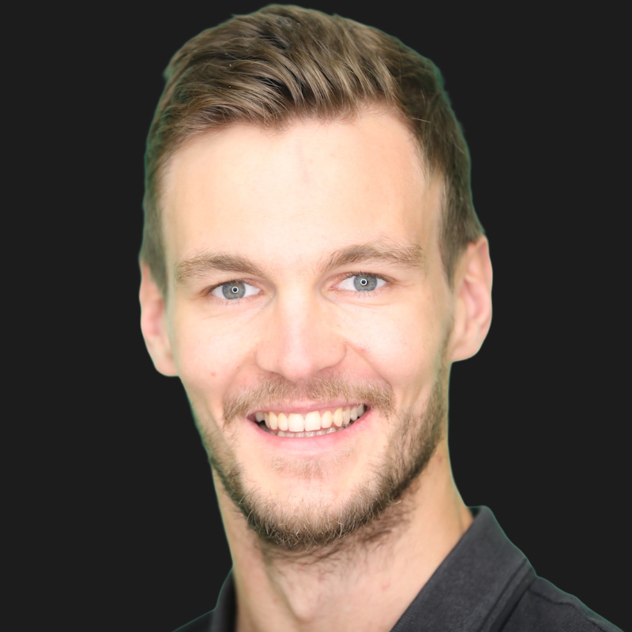

Ingénieur · Triathlète · Papa
Performer sans sacrifier l'essentiel
15 ans dans la tech (OCTO, Tiime, Aircall, Teads). Ex-Senior Engineering Manager. Triathlon 9h/sem. Père de 2. J'ai fait un burnout, reconstruit un système, et maintenant j'aide les pères cadres tech à faire pareil.
30 min · Toi · Moi · Ton agenda · 3 actions concrètes en sortie
Ou reçois un insight terrain chaque semaine :
« Il faut une soupape de décompression. On emmagasine comme une cocotte-minute. Et quand elle s'échappe, tout le monde prend dans la tronche. »
Jérémy, manager IT, marié, 4 enfants
Tu fais du sport « quand tu peux ». Sauf que « quand tu peux », concrètement, ça veut dire : une à deux séances par semaine, parfois zéro. Tu improvises. Tu cales un créneau le midi, « sur ton temps de pause, quand le boulot le permet ». Et quand un imprévu tombe comme une réunion qui déborde, un enfant malade, une deadline, c'est toujours le sport qui saute en premier. Toujours.
Le week-end, c'est pire. Si tu pars 1h, ça passe. Si tu veux faire une sortie de 3h, ça se négocie. Et la négociation, à la longue, ça te fatigue plus que l'entraînement.
Tu n'as pas un problème de motivation. Tu en as assez pour être frustré chaque semaine où ça ne se passe pas comme prévu. Et tu passes du temps à te traiter de gros nul pour ça.
Ton problème, c'est l'absence de cadre.
Tu le sais déjà. Ça fait 6 mois, 1 an, peut-être 2 ans que tu te dis « je vais m'y remettre sérieusement ». Chaque dimanche soir, c'est la même phrase : « Demain, je m'organise. » Et chaque lundi, tu décales.
Pendant ce temps : l'énergie baisse, la frustration monte, et le sport qui était ta soupape devient une source de culpabilité. À la maison, tu sens la friction, des regards, des soupirs. « Ça tient une semaine, après tu prends des remarques », comme me l'a dit un des 33 pères que j'ai interviewés. 82% décrivent exactement ça : ils ne s'autorisent plus à prendre du temps pour eux.
« C'est un peu un cercle vicieux de merde, un peu toxique, qui n'a pas de raison d'être. »
Mathieu D., ingénieur freelance, 1 enfant
Le coût du statu quo, c'est pas juste des séances loupées. C'est de l'énergie en moins au boulot. De la lucidité en moins à la maison. C'est la cocotte-minute qui monte. Et un sentiment qui s'installe : tu subis ta semaine au lieu de la piloter.
En 6 mois, j'ai interviewé 33 pères en profondeur et échangé avec plus de 690 sur LinkedIn et en DM. Des Engineering Managers, des CTOs, des développeurs seniors, des freelances. Running, triathlon, vélo, muscu, crossfit, basket, judo. Tous motivés. Tous frustrés.
La bonne volonté, ça ne tient pas face à un agenda de cadre tech + un enfant de 2 ans qui fait ses dents + une release qui patine.
Je ne suis pas coach sportif. Je ne fais pas de plans d'entraînement ni de prépa physique. Et je ne suis pas coach de vie non plus. Je trouve que c'est un mot valise qui ne veut rien dire.
Ce que je fais, c'est de la productivité appliquée à la vie personnelle. De l'ingénierie de système. Un problème a toujours une ou plusieurs solutions : il faut identifier le blocage, poser un cadre, et l'exécuter.
Mon système repose sur 3 piliers :
Des créneaux sanctuarisés. Pas « je verrai lundi matin ». Des blocs fixes dans l'agenda, aussi non-négociables qu'un one-on-one avec ton N+1. Tu ne les déplaces pas. Tu ne les supprimes pas.
Un plan B structuré. 70% des systèmes sport que j'analyse reposent sur un seul créneau. Quand il saute, c'est zéro sport pour la semaine. Avec Le Cadre, chaque créneau a un tampon : un créneau de secours, une séance courte de remplacement.
Un accord explicite avec ta conjointe. Le sport qui tient, c'est le sport qui a été décidé ensemble. Une fois, clairement, sans avoir besoin de renégocier chaque week-end. Un accord explicite.
« Le fait de le voir le matin dans mon agenda, je me fais une image de la journée et c'est beaucoup plus facile à suivre. Je n'ai pas eu de grosses difficultés à tenir le plan. »
Mathieu, 40 ans, ingénieur freelance, 1 fils. Passé de 0 à 4-5h de sport/semaine
« Plus je suis énervé au boulot, plus j'ai besoin de faire du sport. Avec un plan clair, c'est facile. C'est juste les obstacles autour qui me freinaient. »
Guillaume, ingénieur, en couple. Plan tenu malgré maladie + conflit pro
« C'est requis pour ma santé et pour la santé des gens autour de moi. »
Baptiste, Engineering Manager, 2 enfants
« Le coaching m'a enlevé la charge mentale de la planification. Moins tu as à réfléchir, plus tu es efficace. »
Rémi, cadre tech, triathlon
« J'ai regouté, je ne peux plus. Si je ne l'ai pas, il manque un truc. »
Anthony, père de famille. A repris le sport après une longue pause
« Je ne suis pas trop du genre à aller chercher l'aide à l'extérieur. Mais là, je sens bien que tout seul, je ne m'en sors plus. »
Guillaume C., manager tech, 1 enfant
En 14 jours, tu passes de « je fais du sport quand je peux » à « j'ai un système testé et validé qui protège mon sport ». Et surtout : tu reprends le contrôle de ta semaine.
Avant le sprint : Questionnaire diagnostic (15 min)
Tu remplis un questionnaire structuré : ton agenda réel, tes contraintes, ton sport, ta famille, tes blocages.
J'arrive en session 1 avec une analyse déjà faite.
J1 : Session diagnostic + construction (60 min)
On analyse ta semaine ensemble. On identifie les points de friction. On construit ton cadre en live : créneaux
fixes, plans B, stratégie accord famille. Tu repars avec ton planning semaine
configuré dans Google Calendar. Pas un document théorique : ton vrai agenda, avec tes vrais créneaux,
bloqués.
J2 à J7 : Tu testes ton cadre.
Tu vis ta première semaine avec le système. Un screenshot de ton Garmin ou Strava suffit.
J7 : Check-in structuré
Débrief de la première semaine via WhatsApp. Ce qui a tenu, ce qui a sauté, pourquoi. J'ajuste le cadre en
fonction de ta vraie
vie.
J8 à J14 : Deuxième semaine de test.
Tu retestes le cadre ajusté. C'est là que le système se solidifie.
J14 : Session ajustement + livrable final (60 min)
Débrief complet. Je te livre ton document récap : « Ton Cadre Semaine » : le système complet, validé par 2
semaines de test réel. C'est ton système. Il t'appartient.
+ 4 bonus inclus :
Valeur totale : 900€
Si à J14 tu n'as pas un cadre testé qui protège au moins 4h de sport par semaine, je te rembourse intégralement.
Seule condition : avoir fait les 2 sessions et testé le cadre pendant les 2 semaines.
Je prends ce risque parce que le système marche. Je le vis tous les jours depuis 3 ans.
Places limitées. J'accompagne maximum 5 nouveaux clients par mois, pour garantir la qualité de mon suivi et mon engagement durant l'accompagnement.Il reste 4 places pour Avril.
Bonus early bird : les 2 premiers inscrits reçoivent un appel de suivi à J30 (15 min) pour vérifier que le cadre tient dans la durée.
Ce sprint est fait pour toi si :
Tu es père, tu bosses dans la tech (Engineering Manager, CTO, développeur senior, freelance), tu as au moins un enfant en bas âge. Tu faisais 4 à 6h de sport par semaine avant. Tu es maintenant à 0-2h, ou tu as complètement arrêté sans vraiment l'avoir décidé. Tu ne cherches pas des conseils, tu cherches un système.
Ce sprint n'est PAS fait pour toi si :
Tu cherches un plan d'entraînement ou un coach sportif. Tu fais déjà plus de 5h de sport par semaine. Tu n'es pas prêt à avoir une conversation honnête avec ta conjointe sur l'organisation de la semaine. Tu veux du « mindset » et de la motivation, je ne fais pas ça.
Ce n'est pas du coaching sportif. Je ne touche pas à ton entraînement. J'ai un coach pour ça moi-même (MyTribe).
Ce n'est pas du coaching de vie, pas de méditation, pas de journaling, pas de « travaille ton mindset ». Je trouve ça creux quand il n'y a pas de données et de vécu derrière.
Ce n'est pas du conseil en management.
C'est de l'ingénierie appliquée à ta vie perso. Un cadre construit pour ta vie. Testé dans ta vie. Qui protège ce qui compte pour toi quand tout devient urgent.
Florian Marin. 37 ans, 193cm, 82kg. Marié à Audrey (kinésithérapeute du sport). Père de Gaspard (5 ans) et Nathan (3 ans).
15 ans dans la tech. Software engineer chez OCTO Technology, CTO chez Tiime, Engineering Manager chez Aircall, Senior Engineering Manager chez Teads. J'ai managé des équipes, livré des projets, fait des conférences. Et j'ai fait un burnout chez Aircall en 2019.
Le sport a été le premier à sauter. J'avais fait 15 ans de volleyball (des Cadets à la Nationale 1), je m'étais mis au triathlon en arrivant chez Aircall. Et quand le burnout est arrivé, tout s'est écroulé : le sport d'abord, puis l'énergie, puis la lucidité. À la même période, ma mère a eu un cancer de la peau.
Quand j'ai reconstruit, j'ai compris que le problème n'était pas le temps. C'était l'absence de cadre. J'ai construit le mien. Pas à coup de motivation, à coup de système.
Ce cadre tient depuis 3 ans. À travers un déménagement (Paris → Montpellier), 2 naissances, un changement de job, et un lancement d'entreprise en solo où j'ai quitté un salaire de 5k€/mois pour me prouver que je peux être bon partout : famille, carrière, sport.
Aujourd'hui : 9h de sport par semaine. 40min11 au 10km. Objectif 2026 : passer sous les 40 minutes en triathlon M. Je suis coaché par MyTribe (Mathilde Gauthier). Je cuisine tous les soirs. Je suis présent avec mes fils tous les jours (matin et soir).
Ce n'est pas de la chance. C'est un cadre.
Je ne vends pas de la motivation. Je construis des systèmes qui tiennent.
Réserve un Audit Tri-Angle de 30 minutes. C'est un call gratuit où on analyse ta situation : ton agenda, tes contraintes, tes blocages. On vérifie ensemble si le Sprint est pertinent pour toi. Si c'est pas le cas, je te le dis.
Pas d'engagement. Juste une conversation entre deux personnes qui prennent le sport au sérieux.
Le sport ne disparaît pas par manque de motivation. Il disparaît faute de cadre.